O Canva tem sido uma das minhas ferramentas favoritas por sua simplicidade e acessibilidade. Ele me permite criar designs incríveis de forma rápida e intuitiva, seja para redes sociais, apresentações ou materiais de marketing. A flexibilidade da plataforma me permite explorar minhas ideias de forma prática e profissional.
O PicsArt é uma ferramenta poderosa que me permite criar edições criativas e únicas, combinando elementos gráficos e fotografias. A plataforma oferece uma vasta gama de recursos, como filtros, efeitos e colagens, que me ajudam a dar um toque artístico às minhas criações e a criar designs personalizados com facilidade.
O Inkscape é a minha escolha quando preciso de um design vetorial mais detalhado e profissional. Sua versatilidade e recursos avançados me permitem criar ilustrações, logotipos e gráficos vetoriais com precisão. Apesar de ser um software mais complexo, ele é uma excelente plataforma para quem busca explorar o design gráfico de forma mais técnica e profunda.
Sou apaixonada por arte e design, e sempre busco explorar novas formas de expressão visual. O design gráfico é a minha forma de combinar criatividade com comunicação, transformando ideias em peças visuais impactantes. Adoro explorar diferentes estilos e técnicas, sempre com o objetivo de criar designs que transmitam a mensagem de forma clara e estética.


 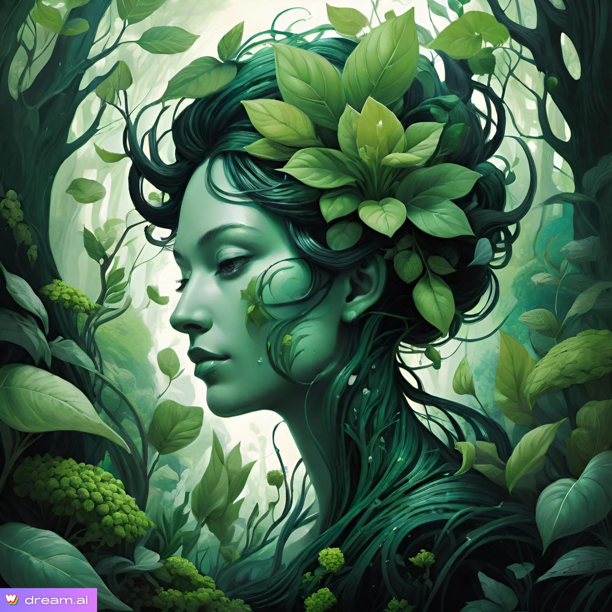
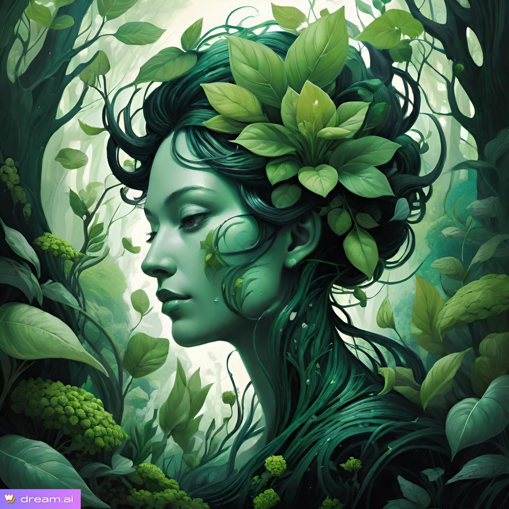
 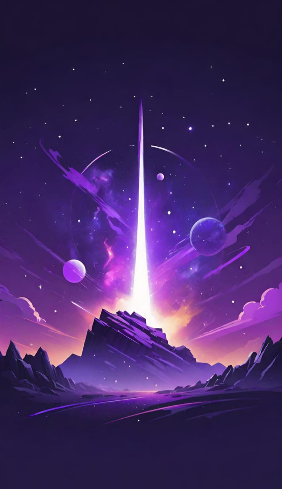
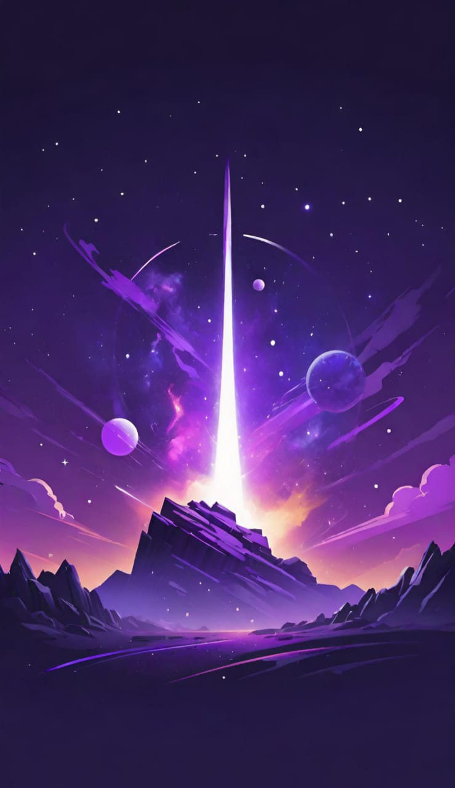


 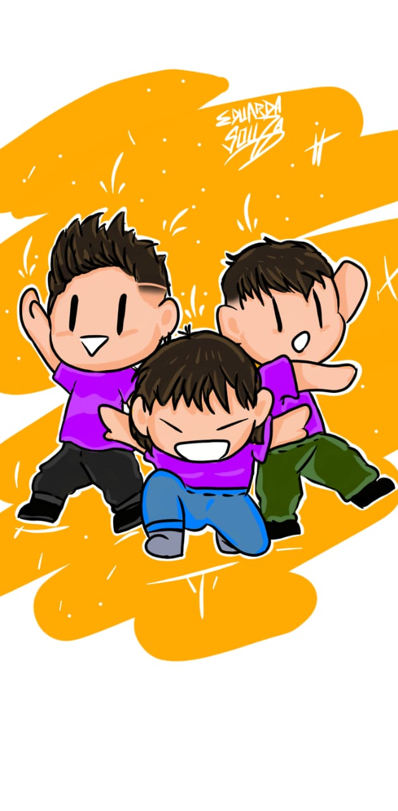
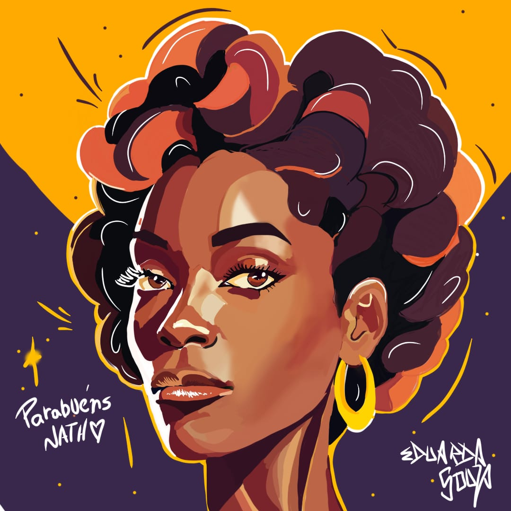
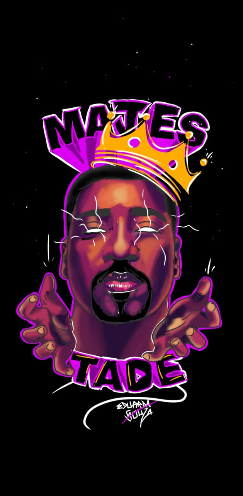
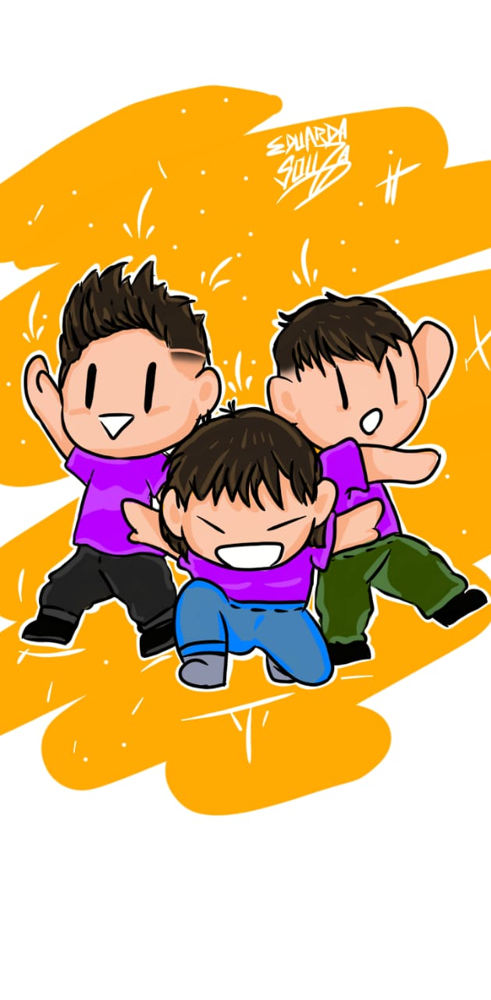
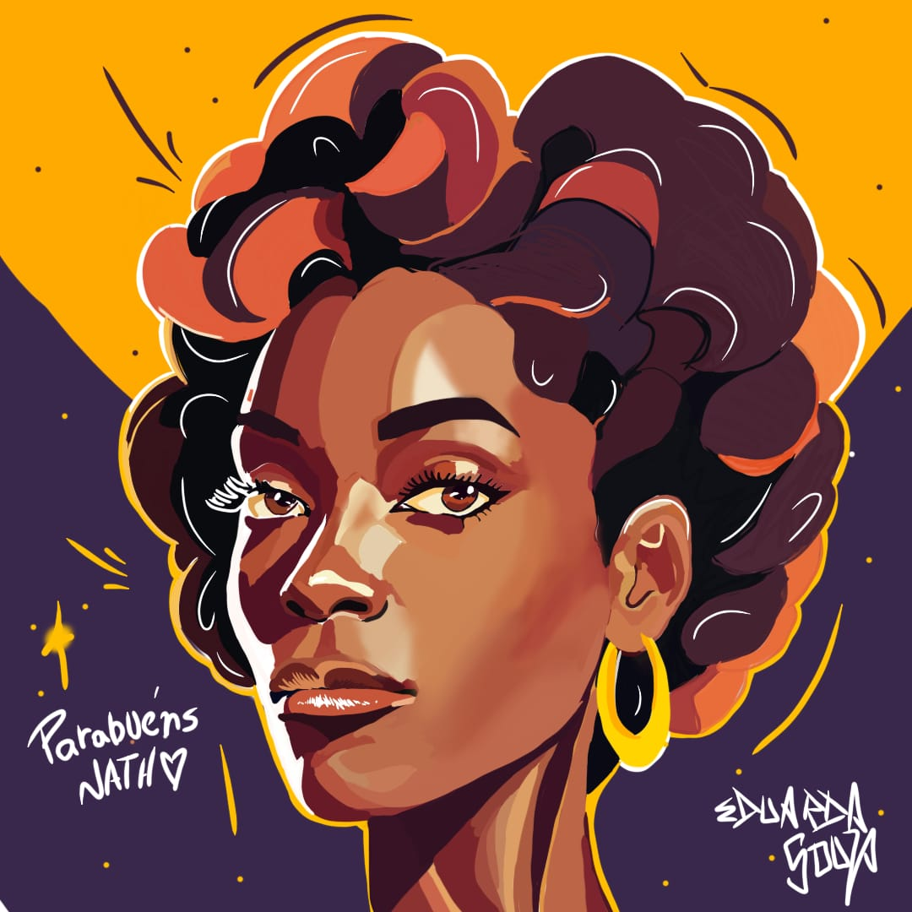
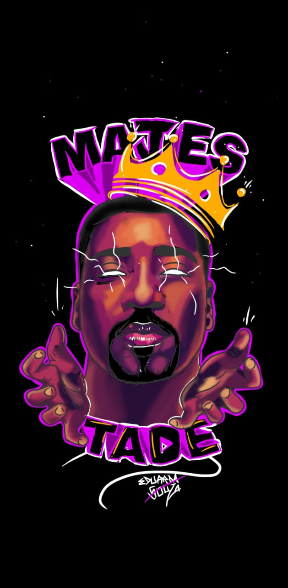
 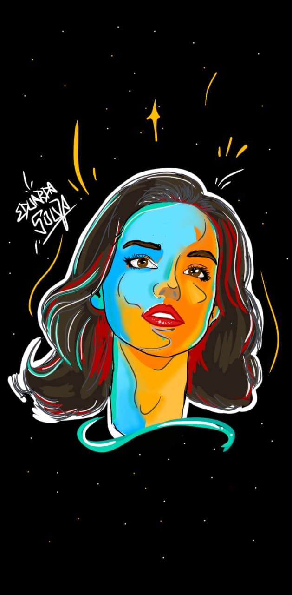
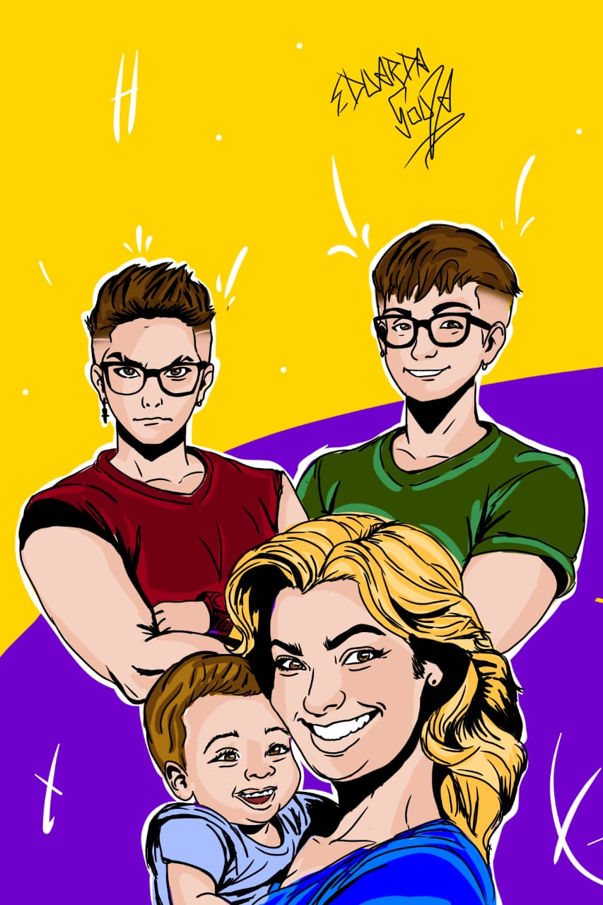
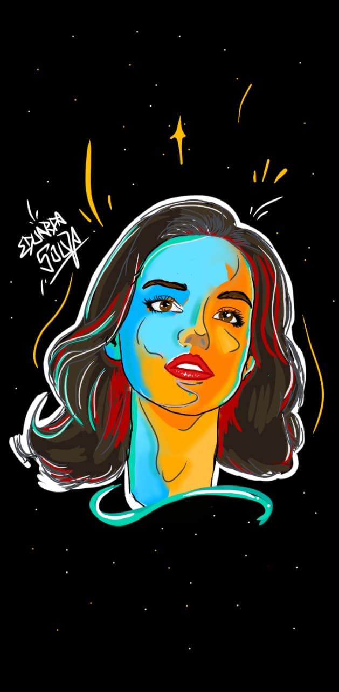
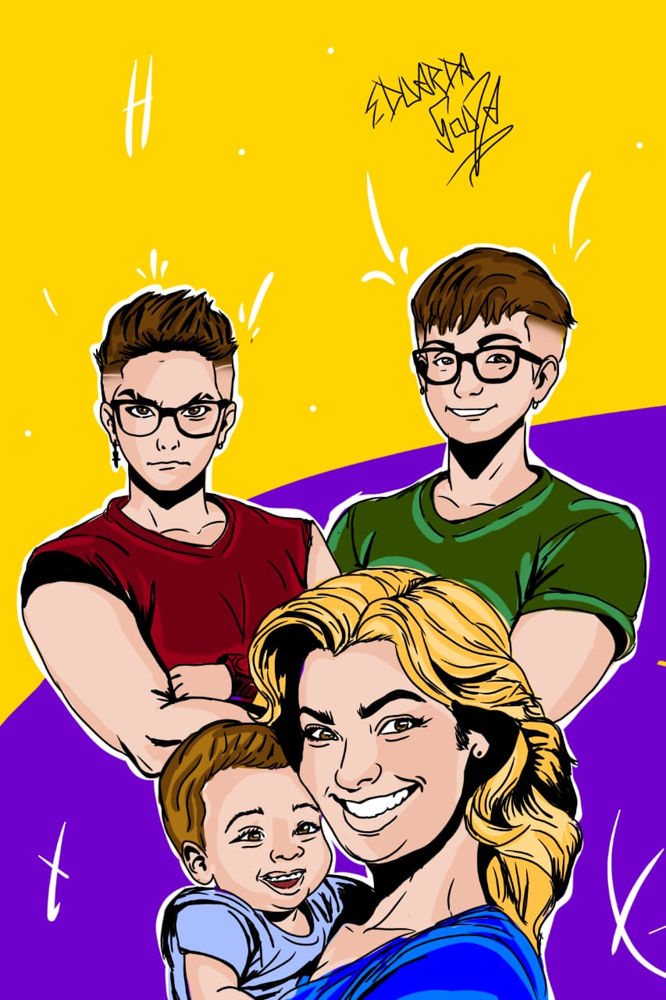